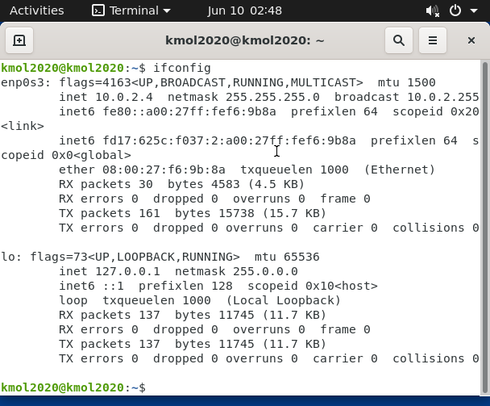
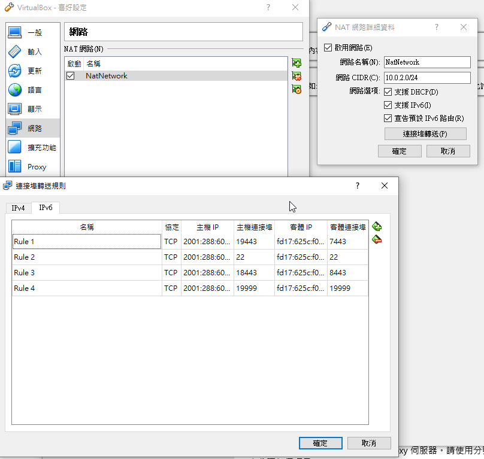
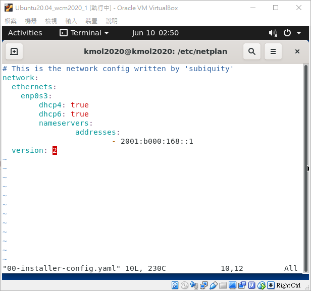
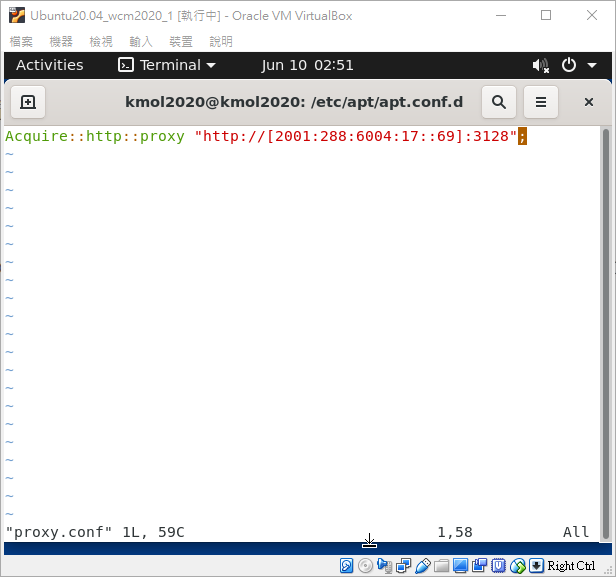

對象Objects <<
Previous VirtualBox
VirtualBox→Files→Preferences→Network
主機IP
2001:288:6004:17 為機械設計系網段
2020為年份
1為cda 2為cdb 3為wcm 4為wcmj
71為407231 表示甲班 72為乙班
01為該班學號
客體ip為虛擬主機的IPV6位址


進入Virualbox後
ifconfig為查詢ip
sudo apt install net-tools為安裝net-tools
cd /etc/netplan
sudo vi 00-installer-config.yaml

cd /etc/apt/apt.conf.d
sudo vi proxy.conf
Acquire::http::proxy "http://[2001:288:6004:17::填port號]:3128";
port號為電腦本身proxy的號碼

udo apt update 更新
vi wsgi.py
填入虛擬主機位址儲存後退出
cd /tmp/cd2020pj1/docs/cmsimde
python3 wsgi.py
使用虛擬主機的瀏覽器即可進入
對象Objects <<
Previous